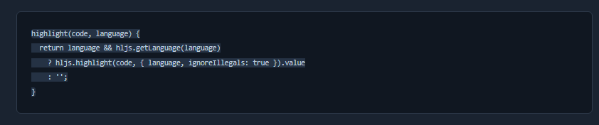
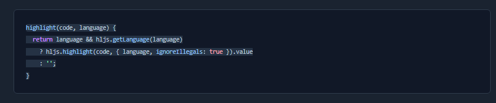
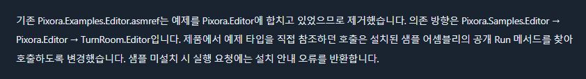
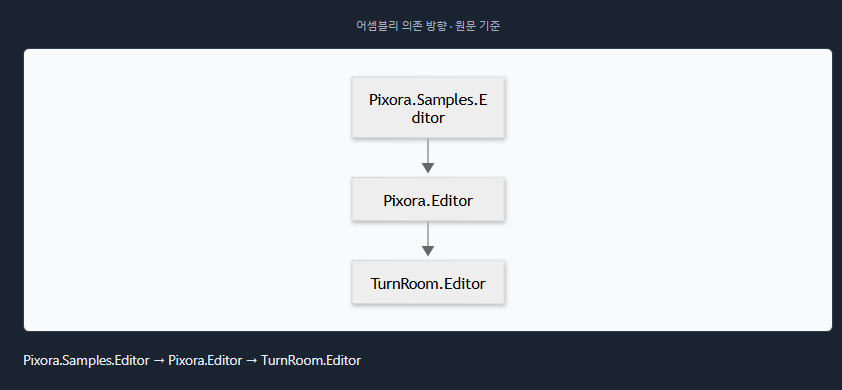

Codex 설정작업 결과
Codex 설정작업 결과기존 개발 기록에 코드 구문 강조와 Mermaid 적용
검증 대기기준 커밋의 20개 프로젝트 1,462편을 조사하고 기존 게시글 59편에 코드 또는 도표를 적용했습니다.
작업 결과
기존 Markdown과 버전별 URL을 보존했습니다. 31편의 코드 블록 488개에 언어별 구문 강조를 적용했고, 28편에는 원문에 명시된 순서나 의존 방향을 Mermaid로 표시했습니다.
변경 내용
적용 내용
구문 강조는 명시된 언어를 사용하고, 표기 없는 블록은 JSON·C#·셸 명령처럼 문법 근거가 명확한 경우에만 분류합니다. SampleProjectForUnity의 공개 커밋과 로컬 Git 객체를 대조해 실제 무기 선택 범위 검사 코드를 추가했습니다. Mermaid는 원문에 적힌 순서가 정확히 일치하는 보고서에만 추가하고, 원문 설명과 텍스트 순서도 보존합니다. 결과·버그·메뉴얼의 상태는 기존 기록을 유지합니다.
교훈 검토는 변경 없음입니다. 기존 전역 지침의 코드 구문 강조, 핵심 설명, Mermaid 렌더링 확인을 적용했습니다.
대화 기록
- 사용자 요청(시각 미기록) “지난 모든 개발 기록들 뒤져서 머메이드와 코드 하이라이터를 기존 게시글들에 갱신 적용 해줘”
- AI 조치(시각 미기록) 공개 아카이브 원문을 전체 조사하고, 코드와 흐름 근거가 확인된 범위에 적용했습니다. 기존 게시글의 설명과 버전별 주소를 보존했습니다.
검증
기준 커밋 21583ae6에서 Markdown/HTML 1,462쌍, 로컬 링크 52,192개, 편집 전 원문과 서식 버전 해시 261건을 검사했습니다. 실제 헤드리스 Chrome에서 변경 59편 모두를 열어 코드 색상 토큰 488개 블록 및 Mermaid SVG 노드를 확인했습니다. 프로젝트별 및 글별 브라우저 확인 기록
코드 구문 강조 전후


Mermaid 표시 전후


남은 사항
다른 글은 원래 표시를 유지합니다. 비공개 또는 버전을 확인하지 못한 소스는 코드 발췌 근거로 사용하지 않았습니다. 도표와 색상은 공개 CDN을 사용하며, 차단된 환경에서도 원문 코드와 관계 설명을 읽을 수 있습니다. 이 원본 작성 시점에는 Pages 공개 확인이 남아 있습니다.
작업 시간
- 제안 시간: 목록·렌더러 조사 약 2
4분. 마지막 적용 대상 확대 후 브라우저 검증·보고서 정리에 약 24분 추가 예상. Pages 배포 대기 별도. - 실제로 완료된 시간: 17:46:18 KST 착수. 17:55:44 KST까지 약 9분 26초 동안 조사·구현·로컬 검증을 완료했습니다.
- XERJ: 미사용 — 코드 검색 근거가 제공되지 않았습니다.